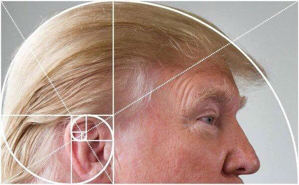

Fun with Flags
A talk by ...
Created by roland@tritsch.org / @innolocity
Fun with Fibonacci
A talk by Roland Tritsch
Created by roland@tritsch.org / @innolocity
Who, what, why
TTTA :)
- Micro-Benchmarking
- Fibonacci Sequence
- Haskell, Scala, Scala-Native
Micro-Benchmarking (Disclaimer)
We should forget about small efficiencies, say about 97% of the time: premature optimization is the root of all evil. - Donal Knuth
- Heisenberg @ Work :)
- Absolut vs. Relative
- Use with care!!!
Fibonacci
Haskell
Scala
Scala-Native
- Sbt
- ???
Results
| Simple(30)(ms) | Stream(30000)(ms) | Fast (30000)(ms) | Constant(30000)(ms) | |
|---|---|---|---|---|
| Haskell | ||||
| Scala | ||||
| Native |
Results
| Simple(30)(ms) | Stream(30000)(ms) | Fast (30000)(ms) | Constant(30000)(ms) | |
|---|---|---|---|---|
| Haskell | 6.0 | 0.070 | 0.080 | 0.001 |
| Scala | ||||
| Native |
Results
| Simple(30)(ms) | Stream(30000)(ms) | Fast (30000)(ms) | Constant(30000)(ms) | |
|---|---|---|---|---|
| Haskell | 6.0 | 0.070 | 0.080 | 0.001 |
| Scala | 6.6 | 8.5 | 4.2 | 0.003 |
| Native |
Results
| Simple(30)(ms) | Stream(30000)(ms) | Fast (30000)(ms) | Constant(30000)(ms) | |
|---|---|---|---|---|
| Haskell | 6.0 | 0.070 | 0.080 | 0.001 |
| Scala | 6.6 | 8.5 | 4.2 | 0.003 |
| Native | 72.0 | 34.0 | 13.0 | 0.001 |
Summary & Take-aways
- Haskell < Scala < Scala-Native
- Implementation < Language
- May the Donal be with you :)